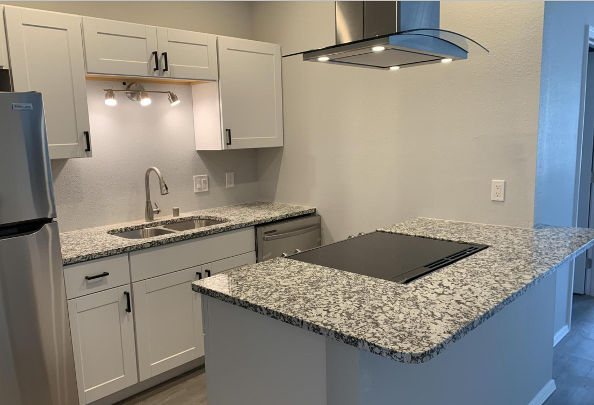
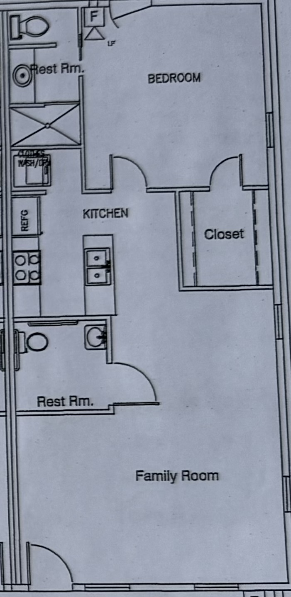

Fully remodeled in 2021 with upscale finishes and designed for comfort: high ceilings, exposed ductwork, granite countertops, tile bathroom, stainless steel appliances, in-unit washer/dryer, refrigerated air, video doorbell, and fingerprint front door lock.
Small dogs and cats welcome. No smoking indoors. Tenant pays gas and electric; landlord covers water.
40% larger than average Albuquerque 1-bedroom apartments. Modern loft-style apartment located in the heart of downtown, just steps from restaurants, courthouses, Old Town (15 min walk), and the grocery store (across the street). Excellent walk and bike scores, plus quick access to I-40 and I-25. Dedicated parking lot for you and your guests.
$1,475/month, $1,000 security deposit, $20/month per pet, $300 per pet security deposit
View more photos and 3D Tour on Zillow.com
14% larger than average Albuquerque 1-bedroom apartments. Modern loft-style apartment located in the heart of downtown, just steps from restaurants, courthouses, Old Town (15 min walk), and the grocery store (across the street). Excellent walk and bike scores, plus quick access to I-40 and I-25. Ample off-street parking available for guests and clients. Walk-in closet.
$1,350/month, $1,000 security deposit, $20/month per pet, $300 per pet security deposit
View more photos and 3D Tour on Zillow.com
 